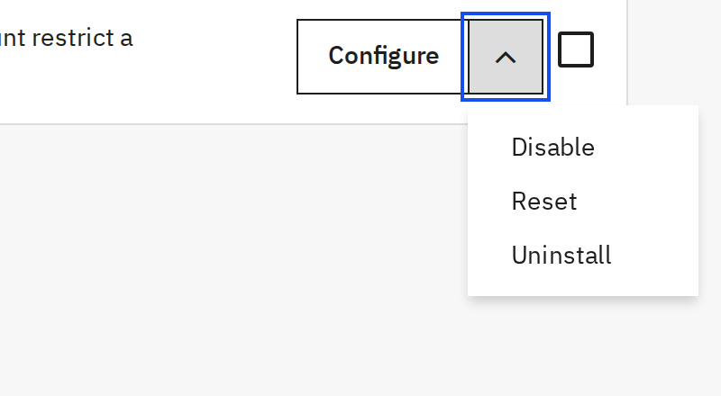

To uninstall the module: go to Modules > Module Manager, search ilmminmaxorderqty, open the dropdown next to Configure, and choose Uninstall.

To completely remove the module from the server, uninstall it first, then use Delete from the same dropdown — this removes the module's files as well as its data.